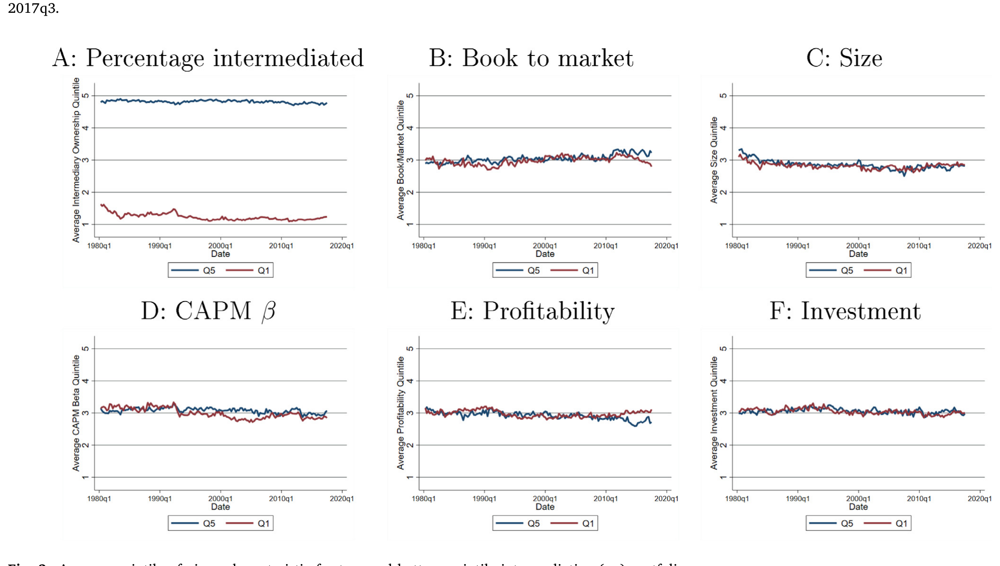
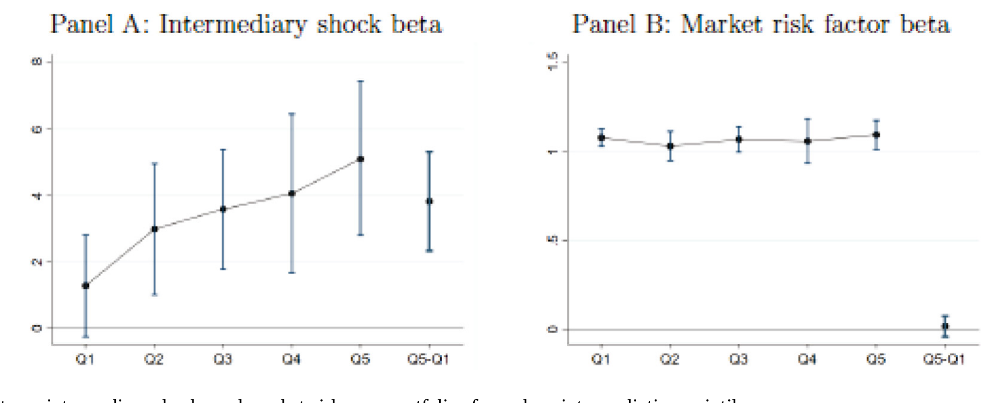
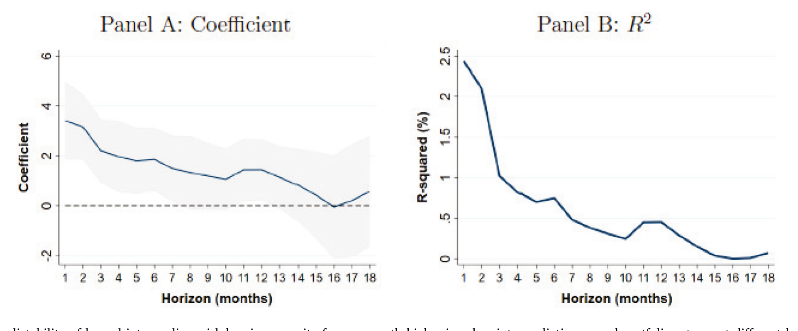
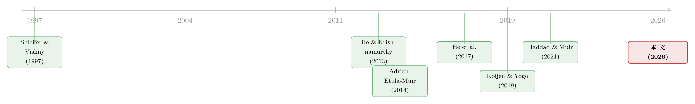

股票，真的是中介「无关」的资产吗？
本文读的是 Seegmiller (2026, Journal of Financial Economics)：把两只「基本面几乎一样、却被机构持有程度天差地别」的股票放在一起比，作者发现——更被中介持有的那只，其收益和风险溢价会随做市商银行「风险承担能力」的冲击剧烈得多地起伏。换句话说，在所有资产里最像「散户主场」的股票市场，金融中介其实也在悄悄定价。
1 一个被默认的结论
资产定价领域有一条流传已久的「常识」：在那些复杂、普通家庭够不着的资产里——信用违约互换 (credit default swap, CDS)、按揭支持证券、外汇、可转债、公司债——金融中介 (financial intermediary) 的健康状况会左右价格。这一点已经被反复验证：Adrian, Etula and Muir (2014) 用经纪自营商 (broker-dealer) 的账面杠杆 (leverage) 冲击定价了一大堆横截面，He et al. (2017) 用美联储一级交易商（做市商银行，dealer banks）的市值资本比也做到了同样的事。
但轮到股票，几乎所有人都会摆手：算了吧。理由很朴素——散户可以自己开户买卖股票，根本不需要中介当二传手。于是 Haddad and Muir (2021) 在系统比较各资产类别之后下了一个谨慎但很有分量的判断：在所有资产类别里，股票恰恰是「最不可能」检测到中介摩擦 (intermediation frictions) 在推动价格的那一类。连 He et al. (2017) 自己都承认，对股票而言，中介也许只是一层「面纱」，把家庭的偏好原样传递过去而已。
这就是本文要正面硬刚的悬念：在散户唱主角的股票市场，你究竟能不能把「中介在定价」这件事从噪音里抓出来？
2 换一个比法：不是股票 vs 别的，而是股票 vs 股票
首先，得想清楚为什么过去抓不住。以往的检验都是跨资产类别地比——拿股票整体去和 CDS、外汇比中介敏感度。可股票里既有散户、也有机构，两股力量混在一起，自然糊成一团。
接着，一个自然的问题是：能不能不跨类别，而是在股票内部找差异？作者的关键一步正在这里。他构造了一个「中介度」(intermediation) 度量，记作 \(\epsilon\)：先把一只股票被机构（共同基金、对冲基金、其他投资顾问，数据来自 13F）持有的比例，对一整套股票特征（规模、价值、动量、盈利、投资等，借自 Koijen and Yogo (2019) 的特征集）做回归，取残差。这个残差 \(\epsilon\) 的含义是：在「基本面长得一样」的前提下，这只股票被机构超额持有了多少。
这一步是全文的灵魂。残差化之后，高中介组和低中介组在可观测特征上几乎无差异——差的只是「谁在持有它」。如果两组收益对中介冲击的反应不同，就很难再赖到基本面头上。
然后，把全样本按 \(\epsilon\) 分成五个分位组合 (quintile portfolio)。如图 2 所示，最高与最低中介分位的组合，在各类特征上的平均分位几乎重合——残差化确实把基本面「拉平」了。

Figure 2: Average quintile of given characteristic for top- and bottom-quintile intermediation (𝜖 ) portfolios
3 识别策略：同时盯住「同期共动」和「事前可预测」
但真正关键的一步在于：怎么定义「中介在定价」？作者强调一种对偶 (duality)——既要看同期共动，也要看事前可预测。
他的主自变量，是把两个最有影响力的中介冲击代理变量标准化后取平均（仿照 Haddad and Muir, 2021）：Adrian et al. (2014) 的经纪自营商账面杠杆冲击，和 He et al. (2017) 的一级交易商市值资本比冲击。前者对应保证金约束在流动性危机中收紧的模型 (Brunnermeier and Pedersen, 2008)，后者对应「自有资金 (skin-in-the-game) 」式的股权约束因道德风险而抬高风险溢价的模型 (He and Krishnamurthy, 2013)。两者相关性并不高，但合在一起，是一个有力的「金融部门风险承担能力 (risk-bearing capacity) 」冲击。
于是检验就清晰了：
- 同期：更被中介持有的股票，收益是否对这个中介冲击反应更大？
- 事前：代表中介当下「健康状况」的状态变量，是否更能预测高中介股票的未来风险溢价？
4 主要结果：单调，而且幅度可观
先看同期共动。结果干净得有点漂亮：对中介因子打一个标准差的正冲击，最高中介五分位组合的年化收益上升约 5.1%，而最低分位只上升 1.3%；首尾价差的 \(t\) 值刚好在 5 以上，并且从低到高中介组，反应是单调递增的。如图 3 所示，这条单调上升的载荷曲线，正是「中介在定价」的指纹。

Figure 3: Coefficients on intermediary shocks and market risk over portfolios formed on intermediation quintile
把 He et al. (2017) 和 Adrian et al. (2014) 两个度量分开放进去，各自都能复现这条单调分选——尽管二者本身不太相关。再换一个理论上同样站得住的代理变量——金融部门的超额收益——单调模式依旧。稳健得让人安心。
接着是一个更接近「准自然实验」的检验：标普 500 (S&P 500) 指数纳入。一只股票被纳入指数后，机构持有显著上升（这一点 Aghion et al., 2013 早有记录）；作者发现，纳入之后，这些股票在 He et al. (2017) 中介资本因子上的 beta 相对对照股票显著跳升。同一只股票、前后对比，特征没怎么变，变的是「谁持有它」——载荷就上去了。这把「中介度→对中介冲击更敏感」的因果链条收得更紧。
然后是事前可预测性，这一节才是作者真正想钉死的部分。他用一级交易商的市值杠杆比平方、以及经纪自营商的账面杠杆比（取负号，使复合度量正向预测）作为「中介风险厌恶」的状态变量。为了不把别的来源的风险溢价变动算到中介头上，他还按 Kelly and Pruitt (2013)、Huang et al. (2014) 的做法，用偏最小二乘 (partial least squares, PLS) 把文献里一大堆收益预测变量压成一个强力的复合「条件风险溢价」控制项。
在这样严苛的控制下，结论是：作者对「当下中介风险承担能力（的缺乏）」的代理变量，能预测最低中介组合条件股权溢价变动的 16%–35%，最高中介组合的 32%–54%，而两个组合之间相对风险溢价的变动，几乎被它解释殆尽。而且这个「来自中介风险厌恶」的份额，也是从低中介到高中介组合单调递增的。
Haddad and Muir (2021) 曾指出，股票市场里有一大块收益可预测性既算不到家庭头上、也算不到中介头上。本文的估计暗示：这块「无主」的可预测性，很大一部分其实来自核心金融机构风险承担能力的变化。
最后一个细节很优雅：这种「高减低中介」价差组合的可预测性，随着被预测收益的期限拉长而衰减，\(R^2\) 也随期限下降（图 6）。这说明中介冲击造成的，是相对贴现率上的临时扭曲，会随中介资本恢复而回归——正是 Duffie (2010)、Gromb and Vayanos (2018) 笔下「资本缓慢移动 (slow-moving capital) 」的味道。

Figure 6: Predictability of lagged intermediary risk-bearing capacity for one-month high-minus-low-intermediation spread portfolio returns at differen
5 机制：到底是谁，把做市商的命运传染给了股票
一个尖锐的质疑会冒出来：13F 里的共同基金、对冲基金，跟一级交易商、做市商银行并不是同一拨机构，凭什么做市商的资本冲击会传到它们持有的股票上？
作者的回答是去查「最可能与做市商命运相连」的那部分机构。结果很说明问题：上述模式在对冲基金（用一份 13F 对冲基金管理人名单识别）身上最为鲜明；对共同基金和非对冲基金投资顾问，则要么是它们通过与「暴露于做市商的对冲基金」在股市中互动而间接相连，要么是它们同时也投债券市场（做市商在债市的直接做市角色更突出，见 He et al., 2022; Li and Xu, 2024）时，才显现出来。
流动性也对得上：做市商和经纪自营商风险承担能力的正向冲击，更能预测高中介股票阿米胡德非流动性 (Amihud, 2002 illiquidity) 的改善——同样只在那部分与做市商相连的机构里成立。（关于做市商如何被「风险限额」这根绳约束、进而把约束传导到价格，可参见《无风险市场里的风险厌恶》。）
作者还特意排除了一个最容易混淆的对手：共同基金的资金流冲击 (Coval and Stafford, 2007; Lou, 2012)。他用 Dou et al. (2023) 的共同资金流冲击去解释按中介度排序组合的相对价格变动——几乎解释不了，控制它对主结论也毫无影响。中介摩擦渠道与资金流渠道，是两回事。
6 模型：一个 CARA-正态的极简世界，为什么会内生出「分割」
本文有一个虽小但很关键的静态模型，把上面所有预测的来路讲清楚了。值得一步步拆。
设定。 两类投资者：代表性中介 \(I\) 与代表性家庭 \(H\)，都是恒定绝对风险厌恶 (constant absolute risk aversion, CARA) 偏好，风险容忍度分别为 \(\rho_I\)、\(\rho_H\)。共 \(N\) 个资产，净供给归一化为 1，现金流服从多元正态 \(D \sim N(\mu,\Sigma)\)。协方差结构借自 Koijen and Yogo (2019)：
$$\Sigma = \beta\beta' + \lambda^2 I,\qquad \beta = X\Pi + \pi$$
其中 \(X\) 是 \(N\times k\) 的特征矩阵，\(\beta\) 是仿射于特征的因子载荷，\(\lambda^2\) 是特质方差。
分歧的来源。 两类投资者对均值 \(\mu\) 的看法不同。家庭相信
$$\mu_H = X\Phi_H + \phi_H + \epsilon_H \tag{1}$$
而中介相信
$$\mu_I = X\Phi_I + \phi_I \tag{2}$$
这里 \(\phi_H,\phi_I\) 在资产间是常数，关键是那个残差向量 \(\epsilon_H\)——它与特征正交（\(\epsilon_H' X = \mathbf{0}\)），代表家庭信念中无法被特征解释的部分，可以理解为预期误差，或对某些资产真实/感知的交易成本。作者特意把误差放在家庭一侧，并证明这「不失一般性」。
求解。 CARA 下，agent \(j\) 的最优需求是
$$\theta_j = \rho_j \Sigma^{-1}(\mu_j - R_f P)$$
施加市场出清 \(\theta_I + \theta_H = 1\)，解出价格：
把价格代回，得到中介需求（也就是「被中介持有的比例」）：
$$\theta_I = \rho_I \Sigma^{-1}\!\left[\frac{\rho_H(\mu_I - \mu_H) + \Sigma\mathbf{1}}{\rho_I + \rho_H}\right]$$
直觉链条，三步走通。 第一，注意 \(\mu_I - \mu_H\) 里含着 \(-\epsilon_H\)：当家庭因为某种与基本面无关的原因（预期误差、嫌交易麻烦）不愿持有某资产时，该资产就被中介超额吸纳——这正是经验上那个残差中介度 \(\epsilon\) 的理论对应物。第二，被中介更多持有的资产，其价格、进而风险溢价，会更多地由 \(\rho_I\) 决定。第三，而 \(\rho_I\) 不是常数——中介资产定价模型告诉我们，它随中介财富上升、随杠杆/在险价值/保证金约束的拉格朗日乘子下降而变化。于是当中介风险承担能力 \(\rho_I\) 被冲击时，越被中介持有的资产，溢价反应越大。
这就是一种资产类别内部的内生分割 (endogenous segmentation)：不是股票 vs CDS 之间的分割，而是股票与股票之间的分割。所有可检验的预测——同期共动随中介度单调上升、事前可预测性随中介度单调上升——都从这一个机制里长出来。
7 文献脉络
把这篇论文放回它生长的土壤，能看得更清楚。
最早的种子是「套利的极限」(Shleifer and Vishny, 1997)：套利者本身受资本约束，价格可以长期偏离基本面。沿着这条线，中介资产定价在 2010 年代成形——He and Krishnamurthy (2013) 给出中介股权约束的一般均衡模型，Adrian et al. (2014) 与 He et al. (2017) 分别用杠杆和资本比把理论变成可上回归的因子，并在大量复杂资产上大获成功。
然后，一个反思的声音出现：Haddad and Muir (2021) 系统比较各资产类别，提出「中介到底是在推动价格、还是只是家庭偏好的面纱」这一更苛刻的问题，并断言股票最难检测到中介作用。与此同时，Koijen and Yogo (2019) 用基于特征的需求体系刻画异质机构（参见《弱替代：因子动物园是从哪里冒出来的？》），Cho (2020) 发现套利头寸更高的异象组合在杠杆因子上 beta 更高。

本文恰好站在这个交叉口：它接过 Haddad and Muir (2021) 的提问，但把战场从「跨资产类别」搬到「股票内部」，用残差中介度 + 同期/事前对偶检验，给出了一个此前缺席的肯定回答——在最像散户主场的股票市场，中介摩擦同样在推动价格。这关乎一个更大的争论：股票的条件风险溢价究竟由谁的边际效用决定（关于贴现率作为资产定价的中心议题，参见《贴现率：资产定价的中心议题》）。
8 评论与延伸（Q&A + 研究方向）
(a) 几个可能的疑问
Q：残差中介度 \(\epsilon\) 真的把基本面拉平了吗，会不会只是漏掉了某个特征？
图 2 显示高/低中介分位组合在所用特征上几乎重合，这是构造决定的。真正的风险是「遗漏特征」——若某个未纳入的基本面同时驱动机构持有和对中介冲击的敏感，模式就会被污染。标普 500 纳入实验是对此的有力补充：同一只股票前后对比，特征大体不变，beta 却跳升，较难用遗漏变量解释。
Q：这和「机构持有 → 价格压力」(Gompers-Metrick, Nagel) 是不是一回事？
不是。价格压力关心的是「持有水平/交易方向」推动价格；本文关心的是「持有更多的股票，其溢价对中介部门健康状况的冲击更敏感」。作者还专门排除了共同基金资金流渠道 (Dou et al., 2023)——控制它对结论无影响。
Q：13F 里的基金又不是做市商，凭什么传导得过去？
这正是第 5 节的机制检验。效应集中在对冲基金，以及通过与做市商暴露的对冲基金互动、或同时涉足债市的共同基金/顾问——做市商通过提供融资流动性、内部资本市场等渠道，把自身资本冲击传染给这些机构的持仓。
Q：5.1% vs 1.3% 的差距，会不会只是高中介股票整体更「危险」？
关键在单调性与残差化：从低到高分位单调递增，且特征已被拉平。而且作者控制了市场风险载荷；图 3 显示中介冲击载荷的单调上升并非市场 beta 的简单镜像。
Q：可预测性随期限衰减，是 bug 还是 feature？
是 feature。它说明中介冲击造成的是临时的相对贴现率扭曲，会随资本恢复而回归——正是 slow-moving capital 的特征 (Duffie, 2010; Gromb and Vayanos, 2018)，与「持久风险补偿」相区分。
Q：那「股票是中介无关资产」这句话，被推翻了吗？
更准确地说是被限定了。股票整体看也许中介色彩最淡，但其内部存在显著的中介度异质性；在高中介那一端，中介摩擦的定价作用清晰可见。Haddad-Muir 的跨类别排序未必错，本文补上了「类别内部」这一维。
(b) 几个可能的研究问题与提案
-
把同样的残差中介度搬到公司债横截面。 【经济故事】公司债是做市商直接做市的主场（He et al., 2022），按理说中介度→对中介冲击敏感的单调模式应当比股票更陡。把债券按「控制了评级、久期、流动性后的机构/做市商持有残差」分组，检验对 Adrian-Etula-Muir、He et al. 冲击的载荷。 【可行性】中。数据可用 TRACE + Mergent FISD + 保险/基金持仓，识别策略可直接平移本文。难点在债券特征控制比股票更微妙（评级迁移、call 条款）。
-
外资持有人是「类家庭」还是「类中介」？ 【经济故事】若把本文的二分扩展到「本国 vs 外国」持有人，外资在美国公司债/股票中的份额，对美国做市商风险承担能力冲击的敏感度，可能与本土机构系统性不同——外资或更依赖本币融资与跨境做市商。 【可行性】中。需 TIC、
13F中可识别的外资管理人、以及外资份额数据。识别上可借标普纳入或指数再平衡引发的外资流入做准实验。 -
中介度与流动性异象的「非中性」。 【经济故事】本文显示高中介股票流动性对中介冲击更敏感。那么按中介度分组的多空组合，是否在 Amihud、买卖价差等流动性维度上系统性暴露？这与「异象多空并非流动性中性」的发现相呼应（参见《流动性的方向感》）。 【可行性】高。所需数据（CRSP、
13F、Amihud）现成，纯横截面构造，可直接做。 -
危机窗口的剂量反应。 【经济故事】若机制为真，2008、2020 这类做市商资本骤降的窗口里，高中介股票的相对回撤与随后反弹应当更剧烈。把样本切到危机窗口估计动态 beta，可检验「临时扭曲—回归」的剧本。 【可行性】高。事件窗口清晰，数据现成；难点是危机样本量小、标准误大。
9 我的判断
这篇论文最漂亮的地方，是把一个看似无法识别的问题，靠重新选择比较单位救活了。当大家都在「股票 vs 其他资产」的维度上无功而返时，作者退一步，在股票内部用残差中介度切出对照组，让「同期共动」与「事前可预测」两条证据彼此印证，再用标普纳入实验和机制分解（对冲基金、债市暴露、流动性）把因果链条一节节扣紧。结论既反直觉又站得住：最像散户主场的市场，中介也在定价。
对识别，我仍有两点保留。其一，残差中介度终究是「控制可观测特征后的残差」，遗漏特征的幽灵无法彻底驱散——标普纳入实验缓解了它，但纳入本身也可能同时改变流动性、指数基金被动持有等多个变量，未必是干净的单一处理。其二，把 He et al. (2017) 与 Adrian et al. (2014) 两个度量「标准化取平均」固然有 Haddad and Muir (2021) 的先例，但复合度量的经济含义会比单一度量更模糊；好在作者分开放也都成立，这一点削弱了我的担心。
后续我最想看到的，是把这套「类别内部分割」的思路搬到公司债与外资持有人上——那里做市商的直接角色更重，理论上信号应当更强，也更贴近信用市场流动性的现实政策关切。如果在债市能复现出比股票更陡的单调曲线，这条研究线就真正闭环了。
参考文献
- Adrian, T., Etula, E., Muir, T. (2014). Financial intermediaries and the cross-section of asset returns. Journal of Finance 69, 2557–2596.
- Amihud, Y. (2002). Illiquidity and stock returns: cross-section and time-series effects. Journal of Financial Markets 5, 31–56.
- Brunnermeier, M., Pedersen, L.H. (2008/2009). Market liquidity and funding liquidity. Review of Financial Studies.
- Coval, J., Stafford, E. (2007). Asset fire sales (and purchases) in equity markets. Journal of Financial Economics.
- Duffie, D. (2010). Presidential address: Asset price dynamics with slow-moving capital. Journal of Finance.
- Gromb, D., Vayanos, D. (2018). The dynamics of financially constrained arbitrage. Journal of Finance.
- Haddad, V., Muir, T. (2021). Do intermediaries matter for aggregate asset prices? Journal of Finance.
- He, Z., Krishnamurthy, A. (2013). Intermediary asset pricing. American Economic Review 103, 732–770.
- He, Z., Khorrami, P., Song, Z. (2022). Commonality in credit spread changes: Dealer inventory and intermediary distress. Review of Financial Studies 35(10), 4630–4673.
- Huang, D., Jiang, F., Tu, J., Zhou, G. (2014). Investor sentiment aligned: A powerful predictor of stock returns. Review of Financial Studies 28(3), 791–837.
- Kelly, B., Pruitt, S. (2013). Market expectations in the cross-section of present values. Journal of Finance 68(5), 1721–1756.
- Koijen, R., Yogo, M. (2019). A demand system approach to asset pricing. Journal of Political Economy 127(4), 1475–1515.
- Li, K., Xu, C. (2024). Intermediary-based equity term structure. Journal of Financial Economics 157, 103856.
- Lou, D. (2012). A flow-based explanation for return predictability. Review of Financial Studies 25(12), 3457–3489.
- Shleifer, A., Vishny, R.W. (1997). The limits of arbitrage. Journal of Finance 52, 35–55.
- Weber, R. (2023). Institutional investors, households, and the time-variation in expected stock returns. Journal of Financial and Quantitative Analysis 58(1), 352–391.